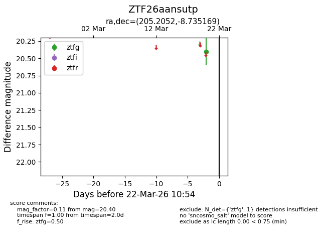
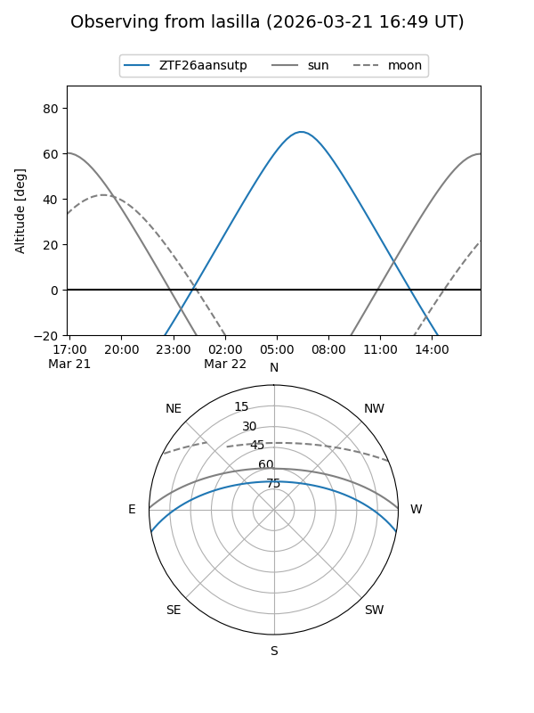
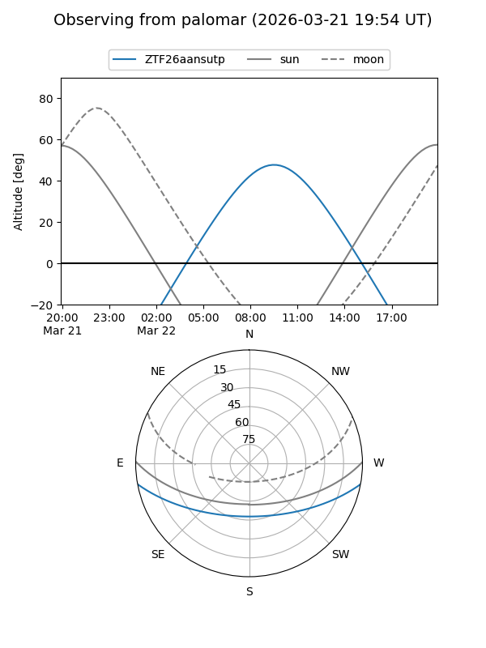

ZTF26aansutp
Target ZTF26aansutp at 2026-03-22 10:56
Aliases and brokers:
FINK: link
Lasair: link
ALeRCE: link
alt names
ZTF26aansutp (ztf,fink_ztf)
Coordinates:
equatorial (ra, dec) = 205.2052,-8.73517
equatorial (HMS+DMS) = 13:40:49.26,-08:44:06.61
galactic (l, b) = (323.0979,+52.19240)
Flags:
Photometry:
last ztfg=20.40
1 ztfg detections
Lightcurve

Visibility


Additional plots